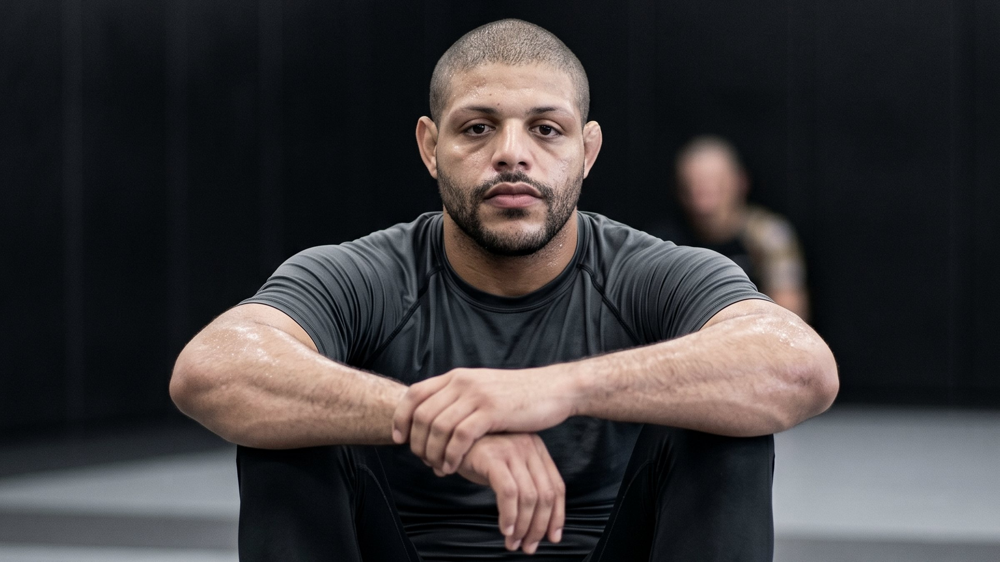
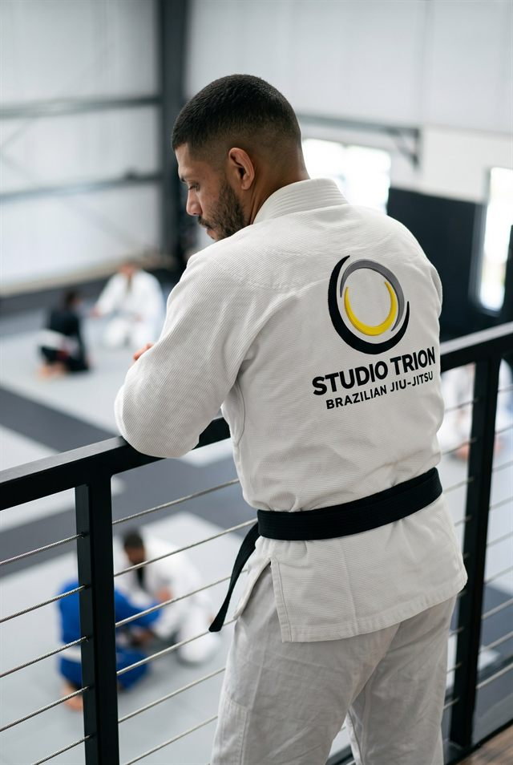
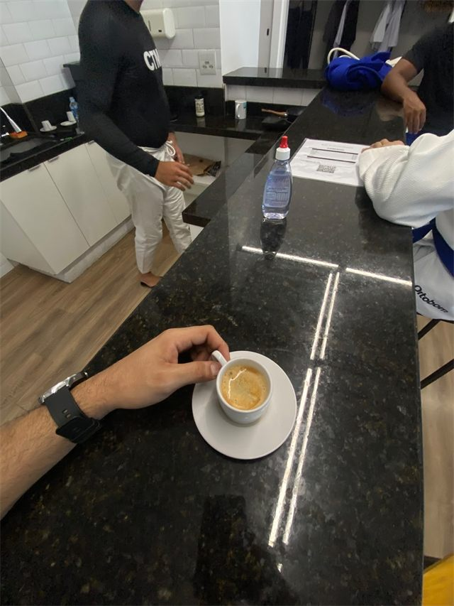

Vídeo futuro
Técnica curta, corte vertical ou bastidor de aula.
@leothaylor
É percepção que vira técnica. Faixa preta e professor na TRION, Rio de Janeiro.

Trajetória
Sou Leo Thaylor, faixa preta de jiu-jitsu e professor contratado pela TRION, no Rio de Janeiro. Treinei a maior parte da vida na academia Marcio Rodrigues antes de chegar aqui.
Já dei aula para criança, para adulto, em academia e em colégio. Esse site organiza trajetória, método e o jeito como ensino sem prometer milagre, sem fórmula mágica.
Método
Aqui, golpe nunca é o ponto de partida. Todo ataque nasce de uma posição e de um controle. Sem isso, é só tentativa.
Ler pressão, distância e direção antes de gastar força.
Colocar o corpo em um lugar que faça sentido.
Manter vantagem sem pressa e sem excesso.
Finalizar ou avançar quando a construção abre caminho.
Presença
Conteúdo
Técnica curta, corte vertical ou bastidor de aula.
Explicação de conceito ou detalhe do método.
Treino, turma ou rotina no tatame.
Momentos
Registro do dia a dia na TRION. Uma galeria pronta para crescer conforme novas fotos aparecem.





Contato
Para ver aula, rotina e conteúdo, o Instagram é o melhor lugar. Para tirar dúvida ou marcar uma aula experimental, chama no WhatsApp.